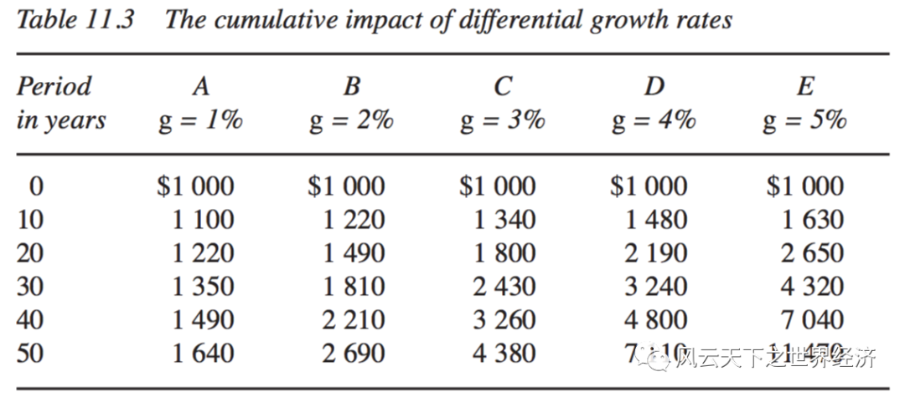
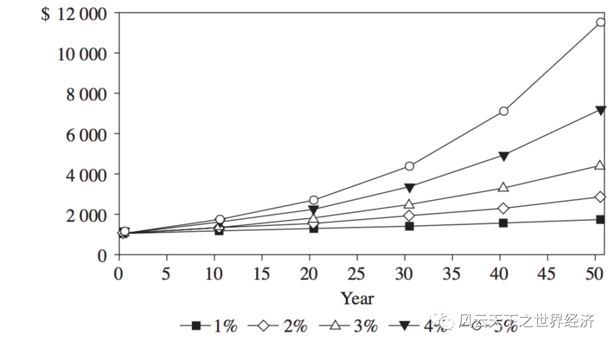
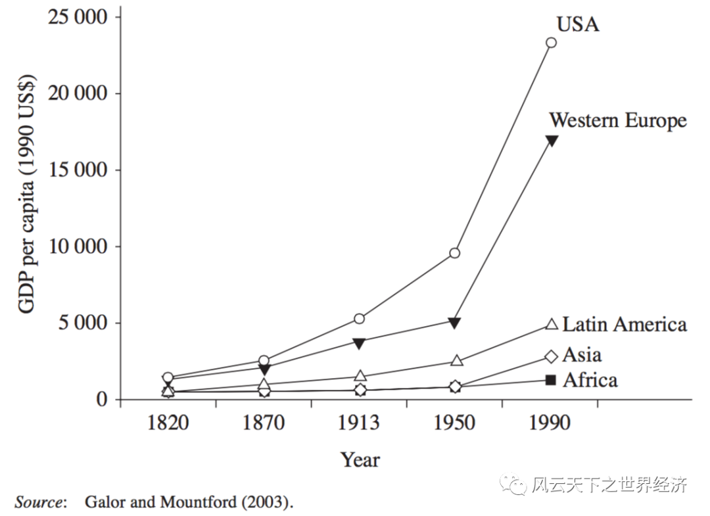

如果找一个数字来刻画经济增长，那一定是自然常数e。
当代的价值体系和伦理观塑造了我们周遭的世界，也赋予了物质财富对于人们生活无可撼动的主导地位——如果想活得更好，那就让你的物质世界极尽丰富。于是经济增长就成了一个国家所有使命中最被看重的那一个。
在人类财富增长的曲棍球杆上，1800年前后是一个分界点，把一万两千年的经济史简单粗暴地分成了两段。在这个时点前，人们的生活在困苦和温饱中反复跌宕，宿命般匍匐在时间的坑道里。即使是在那些风调雨顺的好年景里，大部分人也只是刚刚越过温饱线而已。在这个时点的左端，世界上某些特定的地区，财富的积累开始加速，并展现出了惊人的爆发力，在通往无尽财富的道路上一路狂奔。当然，还有一些不幸国家和地区，他们仿佛被遗忘在1800年前的贫困陷阱里，绝望地凝视那些幸运地区绝尘而去。
这个在200年前开启的国富国穷的加强版本，被称为大分流。
相似的起点，200年的时间却把他们带上了贫富殊途，到底是什么神秘力量在作祟？
让我们从自然常数e说起。
“自然”的自然常数
尽管这个常数更多的时候和数学家欧拉（相传就是取自欧拉名字的第一个字母）连在一起，但是真正发现它的，是另一个瑞士数学家雅各布·伯努利，而发现的场景则来自于一个古老的经济问题——高利贷。不过这一次不是出于伦理对灵魂的拷问，而是为了洞悉隐藏在数字之间的一个惊天秘密。1683年，当伯努利研究无穷级数时，曾讨论过这个有趣的“复利”问题。复利也叫利息的利息，是人们在日常借贷中常遇到的事。存入银行一笔钱，到期以后，本金加利息一并变成新的本金按原来的利息接着续存，这就叫“复计利息”，简称“复利”。
数学家雅各布·伯努利和里昂哈德·欧拉
假设在银行存了 1 块钱 , 而银行提供的年利率是 100%, 也就是说 1 年后连本带息, 你会得到 2 块钱；如果半年结息一次，这个数字变成了2.25；按季度结算，则是2.44；月度结算是2.61304；如果每周结息一次，这个数字变成了2.6926。
你会发现，随着结息频次的提高，这个数字一直在增加。一般人可能会认为，当结息的频次提高到无穷大时，这个数字将会趋于无穷。
伯努利的贡献在于，他把这个问题编写成一个无穷级数，假如是指一年中结算利息的次数，则最终的本息和等于：
如果当初存入的钱数是1，当存的次数无限多时，盈利的总和竟然趋向一个有限的值，而这个值就是！约为2.71828182845904523536……，无限且不循环。
它的发现告诉我们：是树就不会长到天上去，常数就是增长的极限。
如果年利息不是100%，而是任意一个数值呢？雅各布·伯努利弟弟的学生，另一个伟大的瑞士数学家里昂哈德·欧拉破解了这个更具一般性的问题。
随着这个表达式的出现，指数函数横空出世。
1731年11月25日，欧拉在写给数学家克里斯蒂安·哥德巴赫的信中谈到了e这个数，并将它命名为“自然数”。
在自然界中，大多数事物都处在一种“无意识的连续增长”状态中，上一秒的成长正是下一秒成长的基础。对于一个连续增长的事物，如果单位时间的增长率为100%，那么经过一个单位时间后，其将变成原来的e倍。生物的生长与繁殖，就也类似于“利滚利”的过程。利息这个在经济史上屡遭鞭笞的恶俗事物，恰恰是符合了自然界最“自然”的规律。
那么，这跟经济增长又有什么关系呢？
经济的复合增长与72 法则
经济增长是无数生产活动加总后表现出来的结果。当前的产出，它无非有两种用途，一种在当期被消费掉，另一种则被储蓄下来，成为下一期生产的资本。在消费过程中，它被劳动者吸收，成为下一期“异化”的基础，进入到新财富的创造中。后者直接参与到了下一期生产，成为孕育新财富的土壤。
所有上一秒的产出，都是下一秒财富创造的基础。经济的增长过程与自然界的生长遵循着相似的规律。
不同时期的国内生产总值增长率公式与特定存储额随时间按一定利率增长的公式完全相同。这两个公式具有相同的要素: 一个原始起始金额。在经济增长中叫做 GDP，在储蓄中被称为本金。随着时间的推移，前者的增速就是 GDP 复合增长率，而后者的增速则是利率。增长之所以神奇，都是时间在发挥它的魔力。
⼀个经济体按照每年1%的速度进⾏指数式增⻓，其经济体量将在72年后翻⼀倍，这就是大名鼎鼎的72法则。其证明过程就是用到了复合增长的原理。
假如是人均收入，是其基期值，然后以速度的指数方式连续增长，那么年后的人均收入就是：
如果想让翻一番达到，需要多少年？只消求解下式即可：
例如，中国改革开放头40年的年均复合增长率是12%。如果经济始终以这个速度增长，根据72法则，中国GDP将会每6年翻一番。同一时期，美国经济的复合增长率是5.4%，如果两国的保持这样的匀速，中国GDP将在2026年超越美国。
这个曾经不可企及的目标，如今变得近在咫尺。而背后的神奇之处就在于经济的复合增长。增长率即使是微小的差异，在以复利累积一段时间后，其迸发的力量是惊人的。经济学家戴维·罗默将此观点简洁地表达出来：
“⻓期增⻓的福利意义⼤于短期波动的任何可能的作⽤，而后者是宏观经济学传统上关注的东西”。
国富国穷的数学模拟
经济的复合增长对于理解国富国穷的现实有何意义？我们可以从下面的一个数学模拟开始。假如有五个经济体，他们初始的财富都是1000元，在以1%这个微小的速度差异连续增长50年后，他们的状态会是怎样的？

不同增长率累积50年后的结果
如果把这些数字绘在一张图中，你会清晰地感知到这个微小的差异如何导致相对生活水准的巨大分化。

不同增长率对人均收入的影响（Galors and MountFord, 2003）
假如国家A、B、C、D、E分别代表非洲、亚洲、拉丁美洲、西欧和美国，将50年的时间拉长至170年（1820到1990年）。这个假想的情况近乎完美地模拟出了大分流中不同地区的经济走势。

世界经济大分流
也就是说，增⻓率的差异，即使是微⼩的差异，是“⼤分流”的直接原因。
虚拟的世界和真实的世界之间只是隔了一道门而已，而富足和贫困之间的距离也不过是1%的差异。
在了解的⼤分流背后的数学机理之后，经济发展这个宏大的命题退化为仅是在增长率上获得⼀个微⼩的优势而已。
时间的力量让轻与重得以优雅地转换。
米兰·昆德拉在《生命中不能承受之轻》传递给我们这样的喟叹：轻与重本来是同一种东西，他们的差异不过是一种感觉。正因为如此，它无法被选择，只能承受。恰如人类将物质财富赋予极高权重的当下，似乎唯有财富积累才是关乎人类福祉的终极手段。而这个沉重的命题，附在了每一个鲜活跳跃的生命之上。
在轻与重的辩证哲学里，世界经济沉重的身躯在日历中轻盈如燕地穿行。